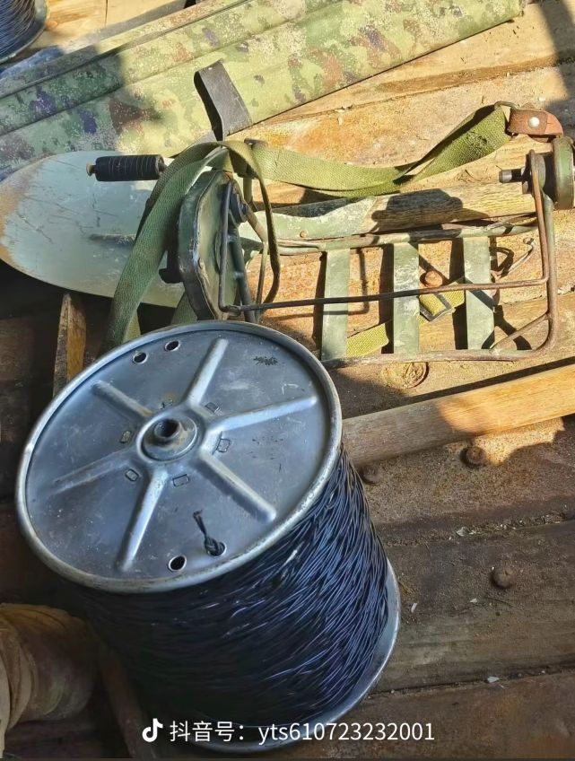
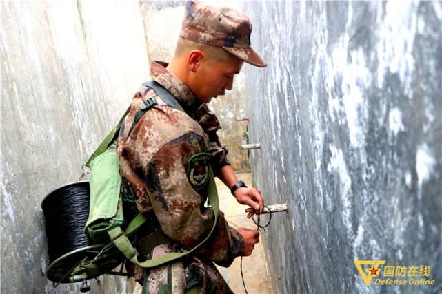

拨号 (56K) → ADSL (几M) → FTTB (百兆共享) → FTTH (千兆独享) → FTTR (全屋千兆)
- 宽带
- 宽带上行速率达 3 Mbit/s，宽带下行速率达 25 Mbit/s（8th）
- 宽带上行速率达 20 Mbit/s，宽带下行速率达 100 Mbit/s（9th）
- 接入方式
- 有线宽带接入 Wire
- 无线宽带接入 Wireless
- 拨号上网 (Dial-up)
- 使用电话线实现
- 电话业务和上网业务不能同时进行
- 已淘汰
- 非对称数字用户线 ADSL
- 宽带接入的拓荒者
- 用数字技术对现有的模拟电话用户线进行 改造，使它能够承载宽带业务
- 可以利用现有电话网中的用户线（铜线），而不需要重新布线
- 在ADSL系统中，电话线被有效利用的频率范围就是 0 ~ 1.1 MHz
- 非对称：0~4 kHz 低端频谱留给传统电话使用/传统电话语音服务，而把原来没有被利用的高端频谱留给用户上网使用；下行Downlink（从 ISP 到用户）带宽 约962 kHz 远大于上行Uplink（从用户到
ISP）带宽约 113 kHz
- 逐步淘汰
电话线频带分布
| item |
frequency |
desc |
| 低频（语音） |
0 ~ 4 kHz |
传统电话语音服务（POTS） |
| 中间隔离带 |
4 ~ 25 kHz |
空置（防止语音和数据的互相干扰） |
| 上行（Uplink） |
25 ~ 138 kHz |
用户→ISP（上传数据） |
| 下行（Downlink） |
138 kHz ~ 1.1 MHz |
ISP→用户（下载数据） |
- 光纤接入 FTTx
- FTTx 表示 Fiber To The…（光纤到…）
- FTTC (Fiber To The Curb)：光纤只到街边的机柜或节点离你家还有几百米。最后一段仍用铜线（电话线或网线）连接，是早期光纤化的过渡方案，速度受铜线质量影响
- FTTB (Fiber To The Building)：光纤铺设到住宅楼或商厦的弱电井/机房，再通过网线或铜线分配到各户。这是国内早期小区很常见的方案，属于“共享入户”，高峰期网速可能波动
- FTTH (Fiber To The Home)：光纤到户；在光纤进入用户的家门后，才把光信号转换为电信号
- FTTO (Fiber To The Office)：光纤到办公室
- FTTR（Fiber To The Room）：光纤到房间，FTTH的升级版，通过光纤把网络延伸到家里的每个房间，实现全屋无死角的超高速Wi-Fi覆盖
- FTTD (Fiber To The Desk) ：光纤到桌面
FTTZ (Fiber To The Zone)：光纤到小区；非标准用语
FTTP（Fiber to the Premises）：光纤到驻地；是个统称，可以涵盖FTTB和FTTH
1. 光配线网 ODN (Optical Distribution Network)
- 从运营商的局端设备（OLT，Optical Line Terminal）到用户家光猫（ONT，Optical Network Terminal）之间，所有光纤线路和无源（不通电）器件/基础设施的总称
- 包括光缆、光纤配线架、分光器、接头盒等
- 是物理实体
- 是工程实施
- 唯一任务就是传输光信号，把高速网络从机房精准地“配送”到千家万户
2. 无源光网络 PON (Passive Optical Network)
- 是 ODN 中采用的一种技术实现模式
- 从机房到用户家之间的所有设备都不需要外接电源，靠光信号本身驱动，因此可靠性高、易于维护
- PON最核心的特点是点对多点（P2MP）
- 利用一个叫“分光器”的无源器件，把一根主干光纤的信号，像树状一样分给几十甚至上百个用户，从而节省了主干光纤的铺设成本 - 一根光纤带千家
- 技术标准
- 光纤同轴混合网 HFC
- HFC (Hybrid Fiber Coax) 网基于有线电视网 CATV 网
- 实现“三网合一”的典型方案
- 改造：把原有线电视网中的同轴电缆主干部分改换为光纤
- 主干网：光纤传输
- 入户网：同轴电缆分配
- 机顶盒（set-top box）：
HFC网络上最重要的用户终端设备之一
连接在同轴电缆和用户的电视机之间
使现有的模拟电视机能够接收数字电视信号
是“看电视”的专用设备
- Cable Modem（有线猫）
负责处理 宽带数据（上网）
是“上网”的专用设备
- 融合型机顶盒
两者合二为一
一块负责数字电视解码（传统机顶盒的功能）
一块负责DOCSIS协议处理（Cable Modem的功能）
HDMI线 → 电视机（看直播、点播、回看）
网线 → 电脑/路由器（上网）
Wi-Fi → 手机、平板（无线上网）
一个盒子，同时顶替了“传统机顶盒 + Cable Modem + 路由器”三件套
融合型机顶盒上网性能通常不如独立的Cable Modem + 独立路由器。为什么？
- 聚焦 Focus
- 最后1公里 The last mile
1. 早期
- 痛处：运营商骨干网到用户家门口这段距离，用的是电话铜线，而不是光纤
- 策略：光进铜退
2. 现在
- 痛处：运营商承诺到用户家光猫的速率；无法保证到用户终端
- 策略：把光纤直接拉到每个房间，然后在每个房间放置一个子光猫/路由，将千兆信号在离终端最近的地方释放
有线和光纤才是千兆的“保底”方案
Wi-Fi更多是“便利”方案


有线兵风采